EL-001 Principe d'alimentation BT : L, N, PE (schéma TT)EL-002 Protection par fusible et par disjoncteur
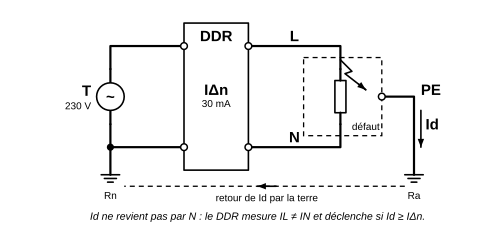
EL-003 Dispositif différentiel et défaut d'isolement (schéma TT)
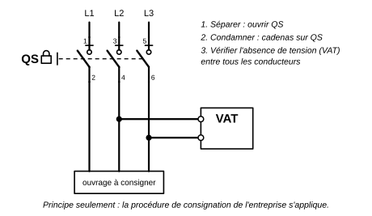
EL-004 Séparation, condamnation et vérification d'absence de tension : principe
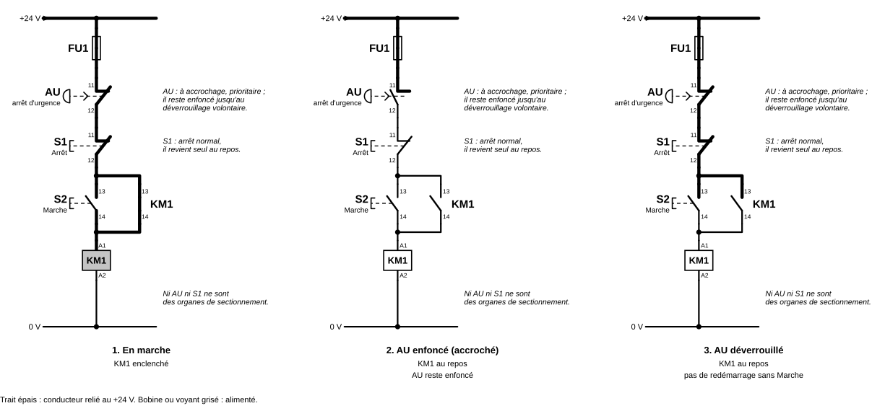
EL-005-etats Arrêt d'urgence : états successifs
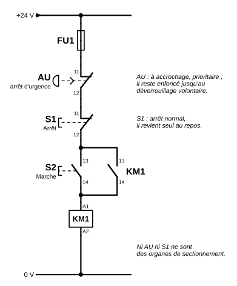
EL-005 Arrêt normal et arrêt d'urgence : distinction fonctionnelle
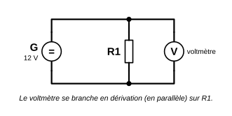
EL-006 Mesure de tension au voltmètre
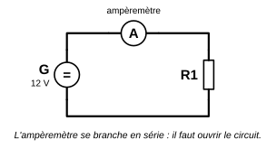
EL-007 Mesure du courant à l'ampèremètre
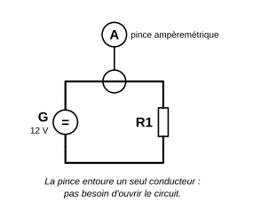
EL-008 Mesure du courant à la pince ampèremétrique
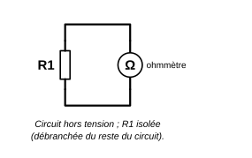
EL-009 Mesure de résistance à l'ohmmètre
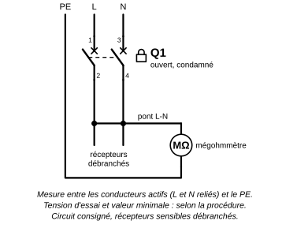
EL-010 Mesure de résistance d'isolement au mégohmmètre (circuit isolé)
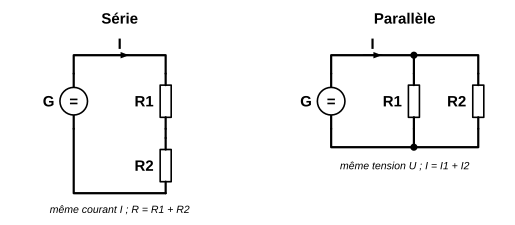
EL-011 Circuit continu résistif : série et parallèleEL-012 Circuit monophasé avec récepteur résistif et récepteur inductifEL-013 Réseau triphasé : L1, L2, L3, N, PE et tensions
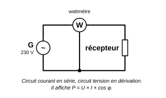
EL-014 Mesure de puissance électrique au wattmètre : montage pédagogiqueEL-015 Contacteur : bobine, contacts principaux et auxiliaires
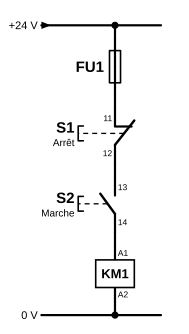
EL-016 Commande Marche / Arrêt sans auto-maintien
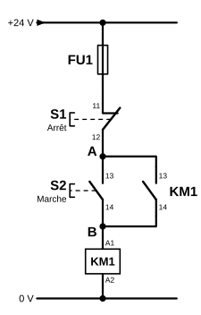
EL-017 Commande Marche / Arrêt avec auto-maintien
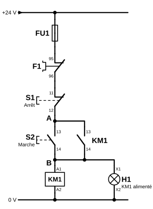
EL-018 Auto-maintien complet avec relais thermique F1 et voyant H1
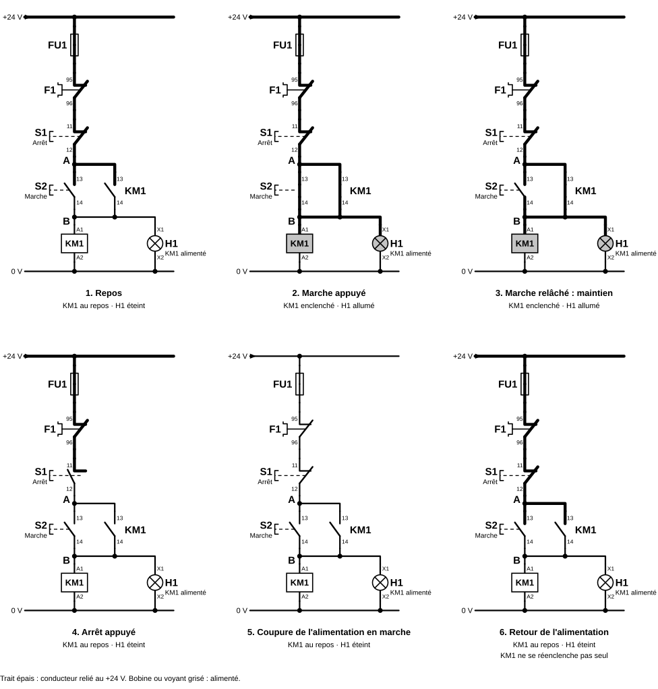
EL-019 Auto-maintien : états successifs
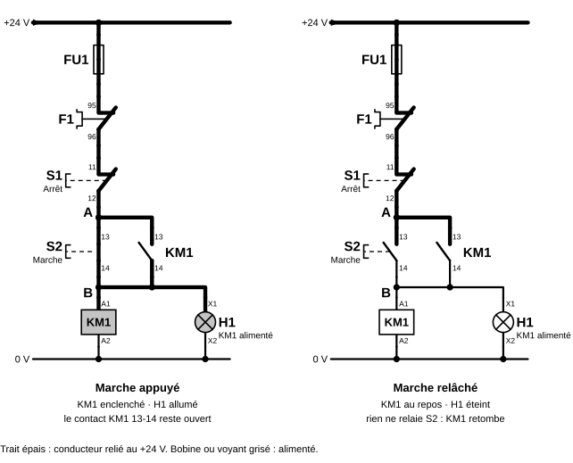
EL-020-corrige Auto-maintien : défaut de contact auxiliaire — corrigéEL-020 Auto-maintien : défaut de contact auxiliaire — schéma de l'exercice